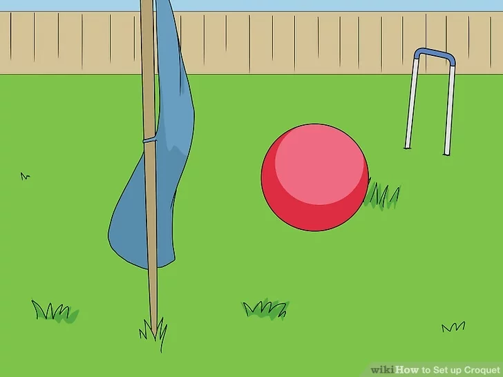
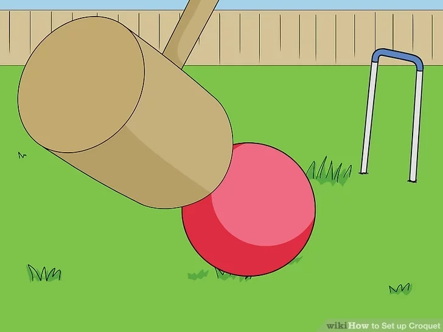
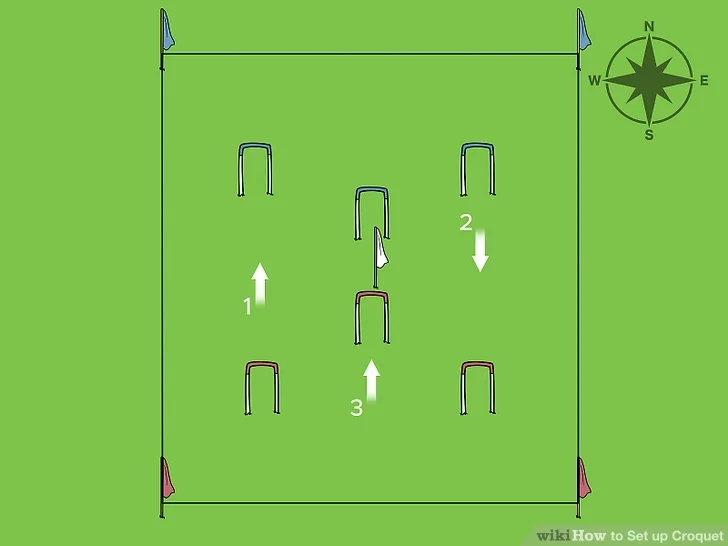
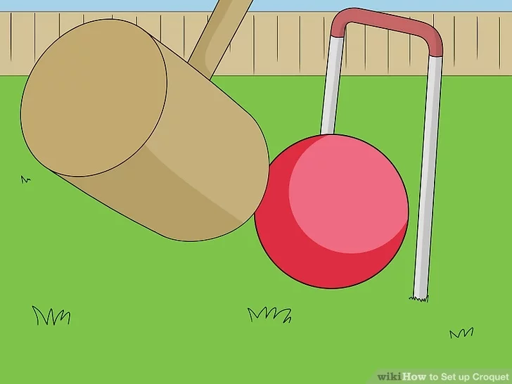
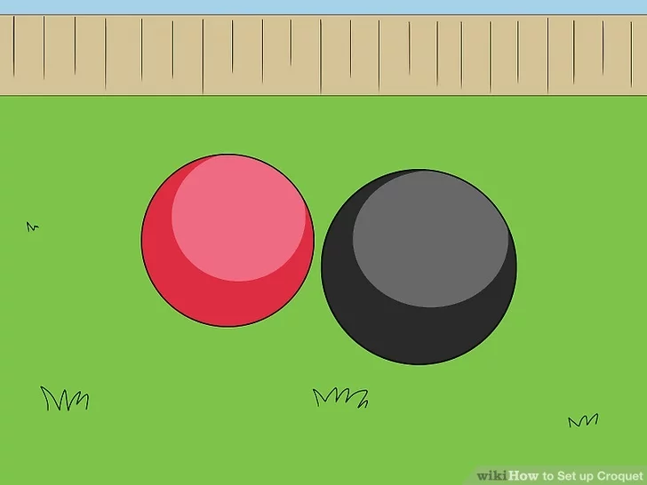
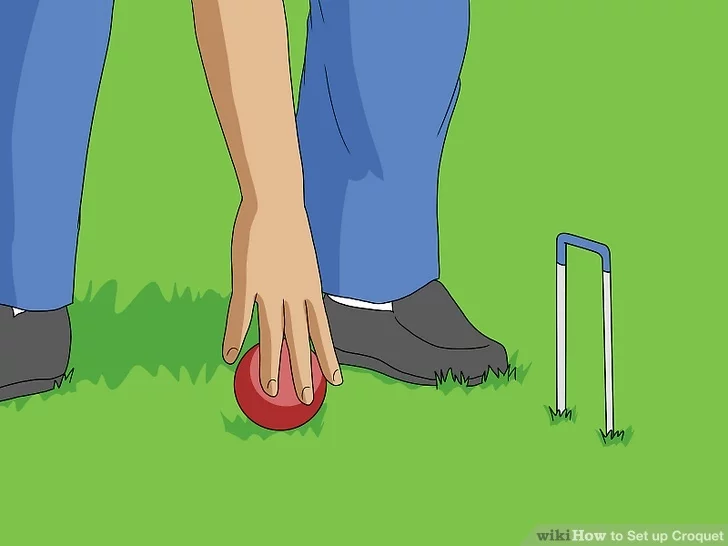

Croquet is a sport that involves hitting wooden or plastic balls with a mallet through hoops (often called "wickets" in the United States) embedded in a grass playing court. While there are many variations of croquet, your croquet set most likely came with either 6 or 9 hoops, and can be used for one of the following set ups. Once the hoops are in place, croquet can last from twenty minutes to several hours, depending on how much conversation takes place in between mallet swings.
Download Instructions
For Saving Instructions Offline Click The Button Below
Croquet balls are usually color coded so you can tell whose is whose. Divide into two teams, so that each team has two or three balls, or have each player use their own ball.
Usually, one team plays with the blue and black balls (and green if available), while the other team plays with red and yellow balls (and orange).
2
Place the first ball halfway a few paces from the starting hoop.

In 9 hoop croquet, place it halfway between the southern stake and the nearest hoop. In 6 hoop croquet, place the ball a few paces between the southwestern hoop and the southern side.[4] This is where each ball will be placed in turn, one at a time. Do not place the next ball until the previous one has been hit.
It doesn't matter if you've forgotten which end is south. Pick one stake and decide to call it the south stake.
3
Take turns hitting the balls with a mallet.

Use the flat side of the wooden mallet to hit the ball firmly, sending it rolling across the grass. The balls are hit in this order: blue, red, black, yellow, green, orange. You normally only get one hit on your turn (but see below), and you do not get to hit a ball with the mallet if it doesn't belong to your team, so the players should rotate as well, alternating between the two teams.
Note that you may choose who goes first with a coin flip or an aiming contest hitting the balls toward a target. If, for example, the green player goes first, play continues in the order listed above: green, orange, blue, red, black, yellow, then back to green.
4
Try to hit the ball through the hoops in order.

The goal of the game is to get your team's balls through the hoops in a particular order, and in the right direction through that hoop. You might want to use colored clothespins or clips that match the balls' colors to keep track of which hoop you are aiming for next.
In 6 hoop croquet, the order is: northward through the two western hoops, southward through the two eastern hoops, northward through the two center hoops.
In 9 hoop croquet, the order is: northward through the two southern hoops, then in a northern zigzag through the eastern and center hoops, northward through the two northern hoops, hit the northern stake, then work your way in the same pattern southward. Use the western hoops instead of the eastern when going back southward. End by hitting the southern stake.
5
Earn an extra shot by making it through a hoop (optional).

This rule is optional, and may not be fun if some players are much better than the others. Every time you hit a ball through a wicket in the correct direction, you may take an extra shot. There is no limit to how many additional shots you may take in a turn.
6
Earn two extra shots by hitting your opponents' balls (optional).

The players should decide whether they want a game that involves more interference and direct competition, in which case they should use this rule. If you manage to hit an opponent's ball with your own, you get to take two additional shots. Note that you cannot hit your opponents' balls with your mallet, only by aiming your own balls toward them.
7
Look up additional rules and variations if you decide to play more.

For a casual game, this is all the information you need to play. If someone makes a mistake, try to put the balls back the way they were and continue to play. There are many more rules and variations in croquet, from official tournament penalties for different errors, to special balls with the ability to remove opponents' balls from the game. Look these up or find an official guide for your regional tournament if you get excited about the game and want to learn more!